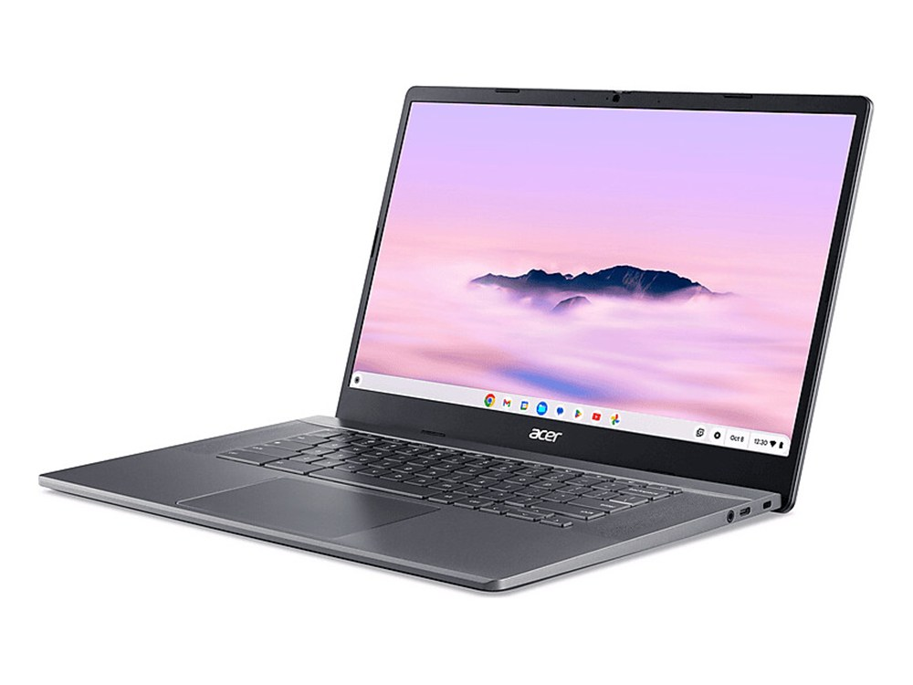
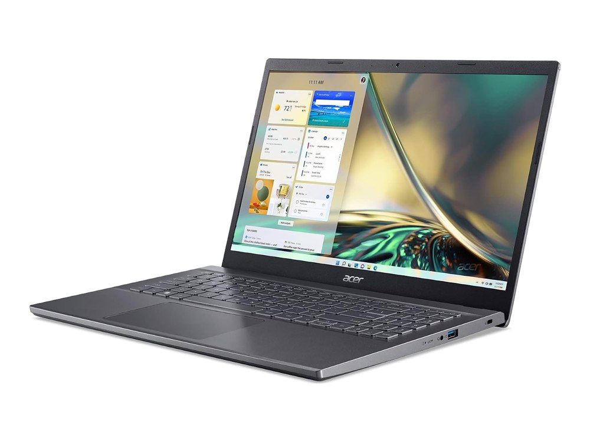
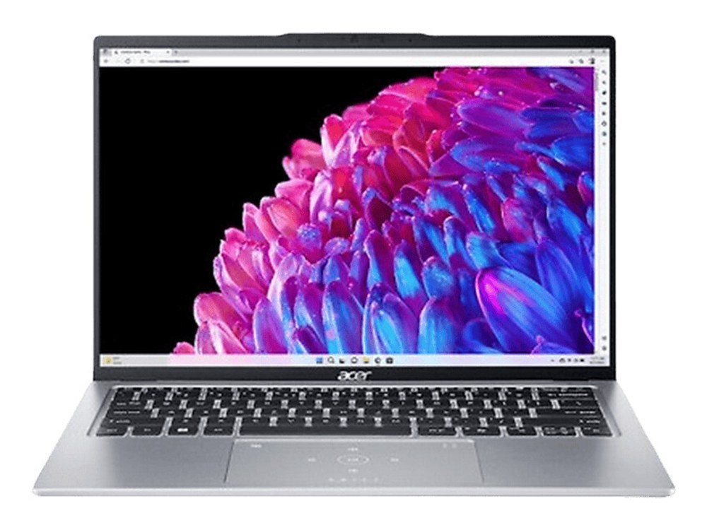

El error más común al comprar un portátil para estudiar es fijarse solo en el procesador. En el día a día pesan más cosas: cuánto aguanta la batería, cuánto pesa en la mochila, si el teclado se ilumina y si la pantalla se ve bien cerca de una ventana. El procesador solo marca la diferencia cuando abres veinte pestañas, editas vídeo o compilas código.
Qué mirar antes que el procesador
- Autonomía real de 8 horas o más. Los fabricantes exageran. Si la ficha dice 12 h, cuenta con 7–8 h de uso normal.
- Peso por debajo de 1,6 kg. Lo vas a llevar todos los días; 300 g se notan en el tercer mes.
- 16 GB de RAM. Con 8 GB irás justo en cuanto uses Teams, Chrome y un PDF a la vez. Si el presupuesto aprieta, 8 GB solo tienen sentido en un Chromebook.
- SSD de 512 GB. 256 GB se llenan con Windows, Office y cuatro carpetas de apuntes.
- Pantalla Full HD o superior. Evita paneles TN baratos: se ven mal en cuanto te mueves de ángulo.
Las cinco opciones que tienen sentido

Acer Chromebook Plus 515 — 449 €
Si todo tu trabajo vive en el navegador (Google Docs, Drive, correo, clases online), un Chromebook es la forma más barata de tener algo rápido y con buena batería. Arranca en segundos y se actualiza solo.
Piensa dos veces si: necesitas instalar programas de Windows, AutoCAD, SPSS o juegos.
Ficha del Acer Chromebook Plus 515 → Ver precio en Amazon →
Lenovo IdeaPad Slim 3 15 — 499 €
El mínimo razonable en Windows: 16 GB de RAM y 512 GB de SSD por debajo de 500 €. No es rápido ni ligero, pero cubre apuntes, Office, navegación y videollamadas sin ahogarse.
Piensa dos veces si: buscas algo que dure cinco años con holgura o que pese poco.
Ficha del Lenovo IdeaPad Slim 3 15 → Ver precio en Amazon →
Acer Aspire 5 15 — 649 €
Sube de categoría en procesador (Core i5 de 12.ª generación) manteniendo 16 GB y 512 GB. Se nota si haces varias cosas a la vez o usas hojas de cálculo grandes.
Piensa dos veces si: la autonomía y el peso son tu prioridad; aquí pierdes en ambos.
Ficha del Acer Aspire 5 15 → Ver precio en Amazon →
Acer Swift Go 14 — 749 €
OLED de 2,8K y 90 Hz en un equipo de 1,32 kg. Para leer, escribir y ver contenido es el salto de calidad más evidente por debajo de 800 €. Además lleva un procesador de última generación.
Piensa dos veces si: trabajas muchas horas con imágenes estáticas y te preocupa el brillo del OLED al sol.
Ficha del Acer Swift Go 14 → Ver precio en Amazon →
HP Pavilion Aero 13 — 799 €
0,97 kg y 13,3 pulgadas: prácticamente no ocupa sitio en la mochila. Es la opción si caminas mucho entre facultad, biblioteca y casa, o si estudias fuera y viajas a menudo.
Piensa dos veces si: necesitas pantalla grande para trabajar con varias ventanas.
Ficha del HP Pavilion Aero 13 → Ver precio en Amazon →Comparación rápida
| Modelo | Precio | Peso | Batería | Ideal para |
|---|---|---|---|---|
| Chromebook Plus 515 | 449 € | 1,68 kg | 10 h | Todo en el navegador |
| IdeaPad Slim 3 15 | 499 € | 1,62 kg | 8 h | Windows al mínimo precio |
| Aspire 5 15 | 649 € | 1,78 kg | 7 h | Multitarea y ofimática |
| Swift Go 14 | 749 € | 1,32 kg | 10 h | Pantalla y ligereza |
| Pavilion Aero 13 | 799 € | 0,97 kg | 11 h | Movilidad máxima |
Portátiles baratos para estudiar: por menos de 500 y 600 €
Con menos de 600 € hay opciones dignas, siempre que no bajes de 16 GB de memoria en Windows. Estas son las del catálogo, de más barata a más cara:
- Acer Chromebook Plus 515 (449 €). El más barato. Con ChromeOS, sus 8 GB y 128 GB bastan, pero solo si todo lo haces en el navegador.
- Lenovo IdeaPad Slim 3 15 (499 €). El Windows más barato con 16 GB y 512 GB. Es lo mínimo que recomendamos para estudiar con Windows.
- Lenovo IdeaPad Slim 3 15IRH10 (579 €). Anuncia 14 h de batería y pantalla de 15,3" algo más alta. Ojo: viene sin Windows (FreeDOS), así que tendrás que instalarlo tú.
Si llegas a 650 €, el Acer Aspire 5 15 da un procesador bastante más rápido. Y si puedes llegar a 750 €, el salto al Acer Swift Go 14 (pantalla OLED y 1,32 kg) es el que más se nota en el día a día.
Mejor portátil para la universidad, según la carrera
La carrera importa más que el presupuesto, porque marca qué programas vas a necesitar:
- Letras, Derecho, Empresa, Educación o Psicología. Office, navegador y PDFs. Sirve cualquiera de esta guía. Prioriza batería y peso: el HP Pavilion Aero 13 o el Lenovo IdeaPad Slim 5 13.
- Ingeniería y Arquitectura. Muchos programas de diseño (SolidWorks, por ejemplo) solo funcionan en Windows y piden gráfica dedicada. Para modelado 3D en serio, un portátil gaming como el HP Victus 15 (749 €, RTX 4050) rinde mucho más que cualquier portátil de esta lista. Consulta antes los requisitos que pide tu escuela.
- Informática y programación. 16 GB de memoria como mínimo, buen teclado y pantalla cómoda. El Lenovo ThinkPad E14 Gen 6 (899 €) saca 90 de 100 en el perfil Trabajo; por debajo de 800 €, el Acer Swift Go 14.
- Diseño, Comunicación o Bellas Artes. La pantalla manda: el Acer Swift Go 14 (OLED, 749 €) o, subiendo, el ASUS Zenbook 14 OLED o el MacBook Air 13" (M4).
- Medicina, Enfermería o Ciencias de la salud. Muchas horas fuera de casa y prácticas: ligereza y batería. El HP Pavilion Aero 13 (0,97 kg) es el que menos se nota.
Todos los portátiles para estudiar por menos de 800 €
La lista completa del catálogo, ordenada por precio. La nota es la del perfil Estudio (sobre 100): combina batería, peso, pantalla y lo suficiente de potencia.
| Modelo | Precio | Nota estudio | Peso | Autonomía |
|---|---|---|---|---|
| Acer Chromebook Plus 515 | 449 € | 82 | 1,68 kg | 10 h |
| Lenovo IdeaPad Slim 3 15 | 499 € | 78 | 1,62 kg | 8 h |
| Lenovo IdeaPad Slim 3 15IRH10 | 579 € | 76 | 1,62 kg | 14 h |
| Acer Aspire 5 15 | 649 € | 74 | 1,78 kg | 7 h |
| Acer Swift Go 14 | 749 € | 82 | 1,32 kg | 10 h |
| ASUS Vivobook 16 | 749 € | 82 | 1,88 kg | Sin dato |
| HP Pavilion Aero 13 | 799 € | 84 | 0,97 kg | 11 h |
| Lenovo IdeaPad Slim 5 13 | 799 € | 86 | 1,19 kg | 28 h |
| MacBook Neo | 799 € | 83 | 1,23 kg | 16 h |
Precios orientativos de referencia. Autonomía según el fabricante; «Sin dato» cuando no la publica.
Mejor calidad-precio: por nota y precio, destacan el Acer Chromebook Plus 515 (82 por 449 €) si te vale ChromeOS, el Acer Swift Go 14 (82 por 749 €) en Windows con pantalla OLED, y el Lenovo IdeaPad Slim 5 13 (86 por 799 €), la nota más alta de la lista. Antes de elegir un Snapdragon como el Slim 5 13, comprueba que tus programas de clase funcionan en ARM.
¿Merece la pena pasar de 800 €?
Solo si tu uso va más allá de estudiar. Con 1.000–1.200 € empiezas a encontrar pantallas mejores, más autonomía y acabados que aguantan mejor el paso del tiempo. El MacBook Air 13" (M5), por ejemplo, arranca en 1.429 € y ofrece 18 horas de batería y un rendimiento muy superior, pero cuesta casi el doble que el Pavilion Aero.
Mi regla: si el portátil va a ser tu única herramienta durante cuatro años, estirar el presupuesto suele salir a cuenta. Si es un segundo equipo o un capricho, quédate por debajo de 800 €.
Preguntas frecuentes
¿Cuál es el mejor portátil calidad-precio para estudiar?
En Windows, el Acer Swift Go 14 (749 €): pantalla OLED, 1,32 kg y 16 GB. Con menos dinero, el Lenovo IdeaPad Slim 3 15 (499 €). Si todo lo haces en el navegador, el Acer Chromebook Plus 515 (449 €).
¿Qué portátil comprar para la universidad?
Depende de la carrera. Para Letras, Derecho o Empresa sirve cualquiera ligero con buena batería. Para Ingeniería o Arquitectura, mira los programas que exige tu escuela: muchos necesitan Windows y gráfica dedicada. Para programar, busca 16 GB de memoria y buen teclado.
¿Sirve un MacBook para estudiar?
Sí, para la mayoría de carreras: batería muy larga y sin ruido. El MacBook Neo (799 €) es el más barato, aunque trae 8 GB. Antes de comprarlo, comprueba que los programas de tu carrera tienen versión para macOS.
¿8 GB de RAM son suficientes para estudiar?
En un Chromebook, sí. En Windows, hoy se quedan cortos en cuanto usas navegador con varias pestañas, Teams y Office a la vez. Si puedes, busca 16 GB.
¿Mejor Intel o AMD?
En este rango de precio da casi igual. Compara el modelo concreto, la autonomía y el precio; no la marca del procesador.
¿Un portátil de 15 pulgadas es demasiado para llevar a clase?
Depende de tu mochila y de cuánto camines. Por encima de 1,7 kg empieza a notarse. Si puedes, prueba uno físico antes de comprar.
¿Y uno reacondicionado?
Puede ser buena idea si compras en una tienda con garantía. Un equipo empresarial de dos años suele dar mejor teclado y acabados que uno nuevo del mismo precio.
Compáralos tú mismo
Elige tu perfil y enfrenta dos modelos: la tabla te dice en qué gana cada uno y cuánto cuesta la diferencia.
Abrir el comparador